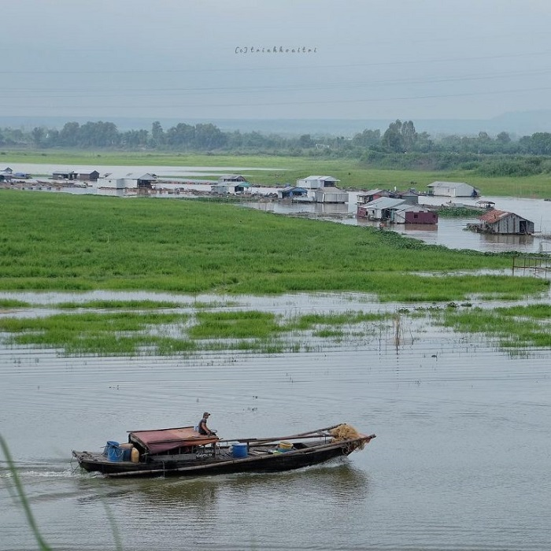
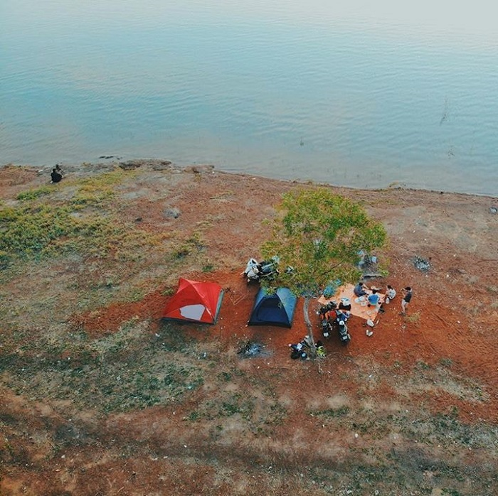

Hồ Trị An sở hữu mặt hồ rộng lớn, dòng nước trong vắt và phong cảnh thiên nhiên hữu tình. Do đó, đây luôn là địa điểm tổ chức cắm trại lý tưởng trong những ngày hè oi nóng. Cắm trại ở Hồ Trị An đem đến cho bạn những giây phút nghỉ ngơi, thư giãn thanh bình!
Hồ Trị An ở đâu?
Hồ Trị An là một bộ phận của đập thủy điện Trị An, nằm trên địa phận tỉnh Đồng Nai, cách thành phố Biên Hòa khoảng 30km. Hồ Trị An sở hữu diện tích lên đến 323 km2, được xem là hồ nước lớn nhất Việt Nam tính đến thời điểm hiện tại. Xung quanh Hồ Trị An có hệ thống thực vật đa dạng, phong phú. Trên mặt hồ lại sở hữu hơn 40 đảo lớn nhỏ. Trong đó, có đảo Ó khá nổi tiếng. Phong cảnh thiên nhiên hữu tình cùng không khí trong lành, yên tĩnh nên vào những ngày cuối tuần, nơi đây thu hút rất nhiều người lui tới để tham quan, vui chơi và cắm trại.
Cách di chuyển đến hồ Trị An
Hồ Trị An cách trung tâm TP Hồ Chí Minh khoảng chừng hơn 60km. Vì khoảng cảnh khá gần cũng như cung đường rất bằng phẳng nên nhiều bạn thường lựa chọn cách tự lái xe để đến đây. Từ TP Hồ Chí Minh, để đến Hồ Trị An, bạn đi đường QL1 hướng về ngã ba Vũng Tàu. Khi gặp ngã 3 Vũng tàu, bạn rẽ phải và di chuyển thêm tầm khoảng 3km sẽ gặp đường Võ Nguyên Giáp.Bạn đi hết đường Võ Nguyên Giáp, gặp QL1 thì rẽ phải. Đi một đoạn, bạn sẽ gặp ngã ba Trị An. Tại đây, bạn rẽ trái vào đường Hùng Vương. Sua đó, chạy thẳng một mạch, qua thị trấn Vĩnh An là đến Hồ Trị An.
Lợi ích của việc đi du lịch Sinh Thái
Những lợi ích từ du lịch sinh thái Du lịch sinh thái là gì? Khái niệm về du lịch sinh thái xuất hiện từ nâm 1991 Du lịch sinh thái là loại hình du lịch diễn ra trong các vùng có hệ sinh thái tự nhiên còn bảo tồn khá tốt nhằm mục tiêu nghiên cứu, chiêm ngưỡng, thưởng thức phong cảnh, động thực vật cũng như các giá trị văn hoá hiện hữu.
Cần chuẩn bị gì cho chuyến đi
Một khi lựa chọn du lịch sinh thái - dù là đi tour hay tự túc, điểm đến phổ biến hay hoang sơ, thì khả năng sai sót, nguy hiểm vẫn có thể xảy đến bất kỳ lúc nào. Dưới đây là những nhóm đồ cần thiết để gia đình có một chuyến đi an toàn và trọn vẹn.